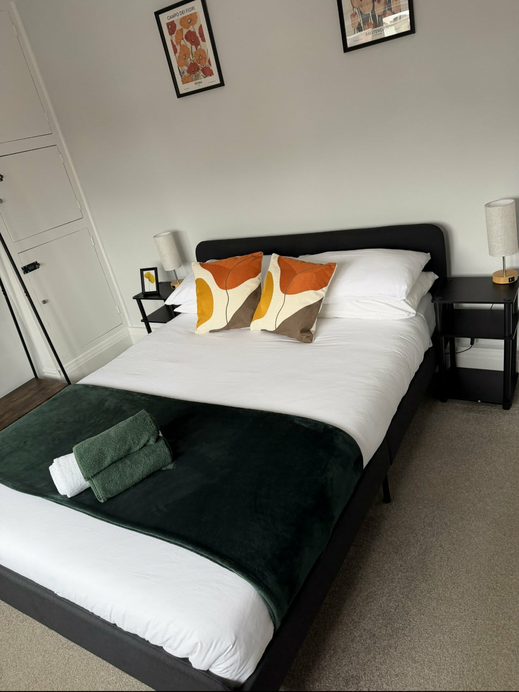
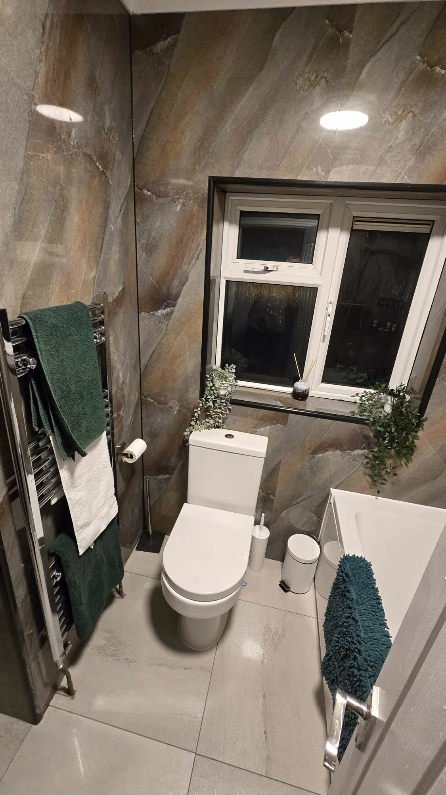

Wheatley, Doncaster - from £72/night
Wheatley 2 Bedroom House Sleeps 6
A practical two-bedroom Doncaster house for smaller groups, contractors, NHS staff and families visiting Doncaster Royal Infirmary. The property sleeps up to 6 guests and is positioned for Wheatley, the city centre, the railway station and hospital-related stays.



Property facts
Two-bedroom accommodation near Doncaster Royal Infirmary
This property is the smaller CHJB Short Stays option, but it still gives guests a whole house rather than separate hotel rooms. It is especially relevant for hospital visits, agency staff, contractors with a smaller crew, families and people who need access to Doncaster city centre.
Photos
Simple, practical space for smaller Doncaster stays
The page gives search visitors a real look at the Wheatley house before they leave for the booking calendar.


Who it suits
For hospital stays, small teams and city access
The Wheatley house is useful when guests need Doncaster Royal Infirmary, Doncaster railway station or the city centre without booking multiple hotel rooms. It gives a smaller group somewhere to cook, relax and park while staying close to the services people tend to need during a Doncaster visit.
For NHS staff, locums and agency workers, a whole house can be calmer than a hotel. For families visiting hospital, the kitchen and living space make longer or uncertain stays easier to manage. For contractors, the property can suit a smaller team that does not need the larger Stainforth houses.
Location
Wheatley, Doncaster accommodation close to useful services
The booking listing describes the property as around 0.5 miles from Doncaster Royal Infirmary and a very short drive to Doncaster city centre. That is the core appeal: it is not trying to be a rural retreat, it is a practical base for people who need Doncaster access.
Doncaster Royal Infirmary
Useful for visiting family, agency shifts, healthcare placements and appointment-related stays.
City centre and railway station
The property works for guests who need Doncaster services, transport and nearby places to eat or shop.
Direct booking
The property-specific booking link opens the Wheatley calendar directly, rather than dropping guests on the general search page.
Property FAQs
Questions about the Wheatley sleeps 6 house
How much is the Wheatley 2 bedroom house?
The current direct booking guide price shown on Uplisting is from £72 per night, depending on dates and availability.
How many guests can it sleep?
The property sleeps up to 6 guests, with two bedrooms and four beds shown on the booking page.
Is it near Doncaster Royal Infirmary?
Yes. The booking listing describes it as around 0.5 miles from Doncaster Royal Infirmary.
Does the Wheatley house have parking?
Yes. The listing describes free parking, including off-road parking for two vehicles.
How do I book this exact property?
Use the property-specific direct booking button on this page. It opens the Wheatley booking page directly.
Check the Wheatley sleeps 6 dates
Open the direct booking calendar for this property to see live availability and the current nightly price.
Check availability for this property